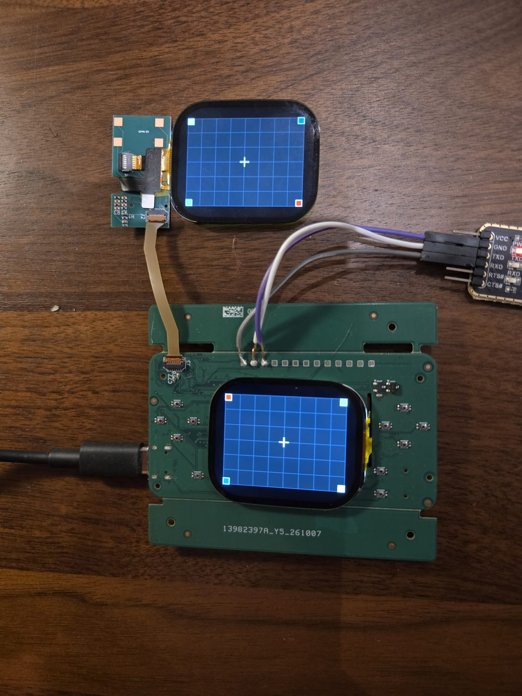
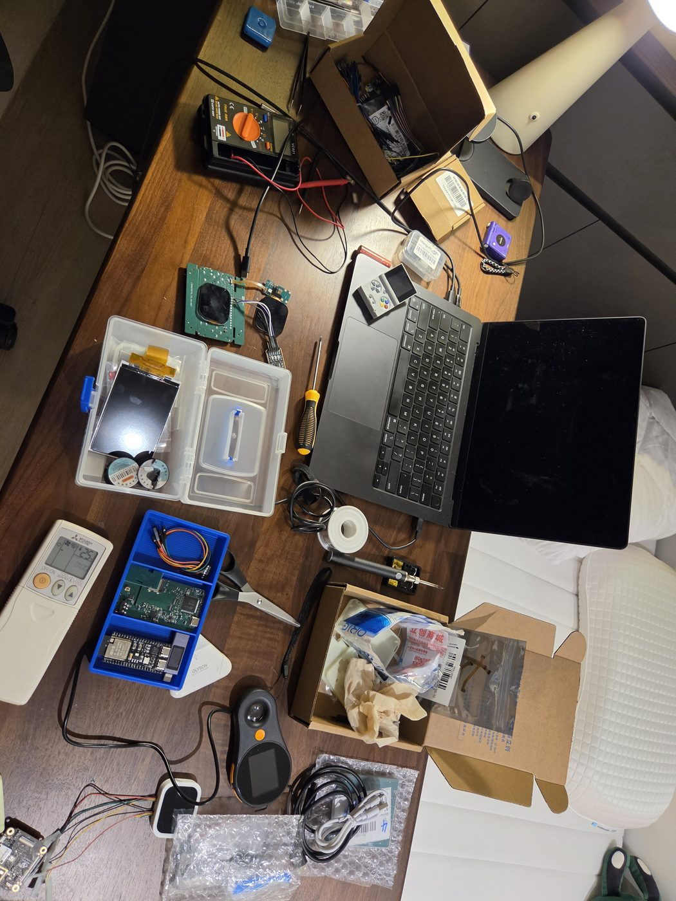

Build log / Oct 18, 2026
First power-on
The first prototype boards arrived from the factory. This is the moment you find out whether a month of design work is a handheld or a very small heater.

Bring-up, step by step
- No smoke. Powered with a current limit first, then checked every supply rail on the test points. All in range.
- It boots. Linux came up, and I could log in over USB from my Mac.
- Both screens. The first time, I plugged the hinge cable in the wrong way round. Nothing broke. Flipped, both screens showed their test pattern with the right colours in each corner.
- No tearing. The screens only sent their refresh signal when it was set to line 0. With that set: 60 fps on both screens with no tearing.
- Touch. The touch chip came from the factory blank, without firmware. I loaded the panel maker's firmware onto it, and touch worked.


Numbers from the first board
| Test | Result |
|---|---|
| Screen refresh at 75 MHz | 60 fps per screen, 11 ms to send a frame |
| DS game, both screens | about 56 fps shown and very smooth to the eye; about 1.1 W total |
| 30-minute stress test | Both cores at full load plus constant SD writes: no crash, 0 errors, settled at 52–54 °C |
| Backlights | about 40 mA per screen |
A few things only got noted down: L / R weren't fitted on this board, and the headphone jack was placed backwards. Both are fixed in the Beta boards.
The next night: a real game
The next evening, still on the bare board with jumper wires, a DS game ran on both screens for the first time.
That night I posted my first progress update on r/SBCGaming.